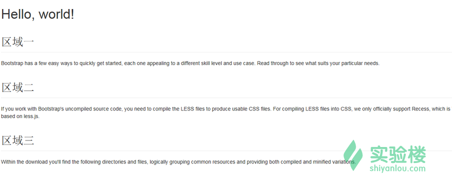
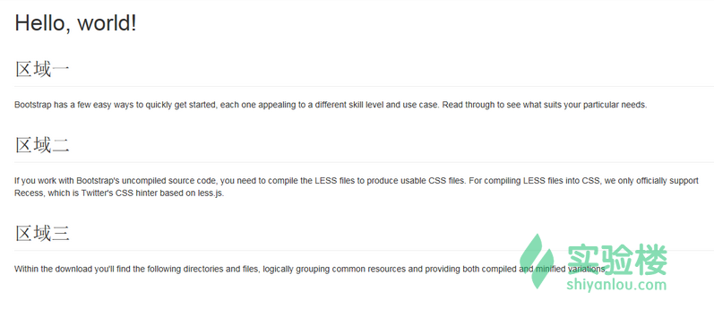
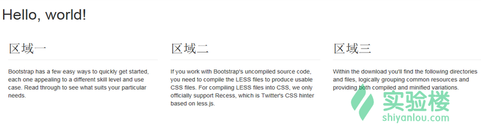

本次实验我们学习bootstrap中的删格系统，栅格系统用来控制页面的整体布局。
Bootstrap 内置了一套响应式、移动设备优先的流式栅格系统，随着屏幕设备或视口（viewport）尺寸的增加，系统会自动分为最多 12 列。
我们在这里是把 Bootstrap 中的栅格系统叫做布局。它就是通过一系列的行（row）与列（column）的组合创建页面布局，然后你的内容就可以放入到你创建好的布局当中。下面就简单介绍一下 Bootstrap 栅格系统的工作原理：
先来个简单的例子：
<!DOCTYPE html>
<html>
<head>
<title>
Bootstrap
</title>
<meta charset="utf-8" name="viewport" content="width=device-width, initial-scale=1.0">
<!-- Bootstrap -->
<link href="css/bootstrap.min.css" rel="stylesheet" media="screen">
<!-- HTML5 Shim and Respond.js IE8 support of HTML5 elements and media
queries -->
<!-- WARNING: Respond.js doesn't work if you view the page via file://
-->
<!--[if lt IE 9]>
<script src="http://labfile.oss.aliyuncs.com/html5shiv/3.7.0/html5shiv.js">
</script>
<script src="http://labfile.oss.aliyuncs.com/respond.js/1.3.0/respond.min.js">
</script>
<![endif]-->
</head>
<body>
<h1>
Hello, world!
</h1>
<h2 class="page-header">
区域一
</h2>
<p>
Bootstrap has a few easy ways to quickly get started, each one appealing
to a different skill level and use case. Read through to see what suits
your particular needs.
</p>
<h2 class="page-header">
区域二
</h2>
<p>
If you work with Bootstrap's uncompiled source code, you need to compile
the LESS files to produce usable CSS files. For compiling LESS files into
CSS, we only officially support Recess, which is Twitter's CSS hinter based
on less.js.
</p>
<h2 class="page-header">
区域三
</h2>
<p>
Within the download you'll find the following directories and files, logically
grouping common resources and providing both compiled and minified variations.
</p>
<script src="js/jquery-2.0.3.js">
</script>
<script src="js/bootstrap.min.js">
</script>
</body>
</html>
当然效果也很简单，把截图放上，可以进行对比。

优化一：可以发现上图的页面效果占满全屏，我们可以通过 Bootstrap 样式类对上面的内容进行居中。
<div class="container">
.........之前上面添加在 body 标签下的代码
</div>
效果如下

可以发现 container 这个类设置了宽度，并且可以让内容显示在页面的中间。
优化二：将三个区域显示在同一排，并且平均分成三栏。
首先为三个区域添加一个容器，可以使用 div，并且为 div 添加一个类 <div class="row">.
然后我们为每个小的区域也添加一个容器 div，并且为 div 添加一个类<div class="col-xs-4">
简单代码实现如下
<div class="container">
<h1>
Hello, world!
</h1>
<div class="row">
<div class="col-xs-4">
<h2 class="page-header">
区域一
</h2>
<p>
Bootstrap has a few easy ways to quickly get started, each one appealing
to a different skill level and use case. Read through to see what suits
your particular needs.
</p>
</div>
<div class="col-xs-4">
<h2 class="page-header">
区域二
</h2>
<p>
If you work with Bootstrap's uncompiled source code, you need to compile
the LESS files to produce usable CSS files. For compiling LESS files into
CSS, we only officially support Recess, which is Twitter's CSS hinter based
on less.js.
</p>
</div>
<div class="col-xs-4">
<h2 class="page-header">
区域三
</h2>
<p>
Within the download you'll find the following directories and files, logically
grouping common resources and providing both compiled and minified variations.
</p>
</div>
</div>
</div>
效果如下

的确排成一列，然后分成三栏。再结合一下上面栅格系统的 6 部原理。是不是懂一点了，反正我自己懂了很多。通过同样的方式可以创建出比较复杂的网格布局页面。只需要在布局使用的容器上面添加相应的网格布局的类。比如说如果内容占用 6 个网格，那么就添加一个 col-xs-6 的类、占用四个网格就添加一个 col-xs-4 的类，然后在同一排的周围进行使用带有 row 类的容器。
本节主要学习的布局（栅格系统），通过简单的实例来理解它的工作原理。
使用过的类有:
.container:用.container 包裹页面上的内容即可实现居中对齐。在不同的媒体查询或值范围内都为 container 设置了 max-width，用以匹配栅格系统。
.col-xs-4:这个类通过"-"分为三个部分，第三个部分的数字作为一个泛指，它的范围是 1 到 12。就是可以把一个区域分为 12 个栏，这个要和 row 类联合使用。
其实这个布局很像 HTMl 中的 Table 布局 TR 行和 TD 列吧。